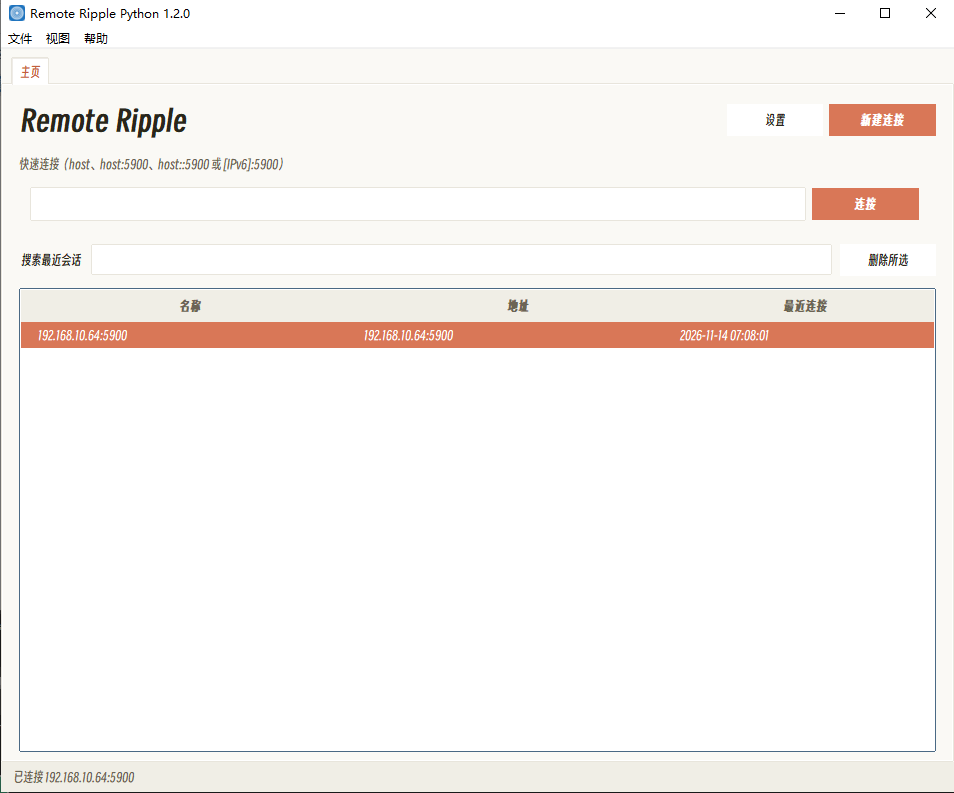

LocalFileDropShell — 工控机文件/Shell/VNC 一体化远程运维
面向工控机与调试机的一体化远程运维工具。同一进程同时提供文件传送
（TightVNC RFB 通道优先 / aiohttp 回退 / 单工喷泉码）、
HTTP Shell（远程命令执行）、rsync 增量同步、
RFB 断点续传、VNC 远程桌面（noVNC + WebSocket 代理）、
CLI 交互式 shell，以及 Win95 风格的 Web 拖传页（/drop/）与
Web 文件管理器（/files/，C 盘写操作需 justsmart 登录）；
主窗口支持最小化到系统托盘。

TightVNC File Transfer 界面原型——LocalFileDropShell 在此基础上复用 RFB 通道，同时叠加 HTTP Shell / rsync / VNC / CLI 能力。